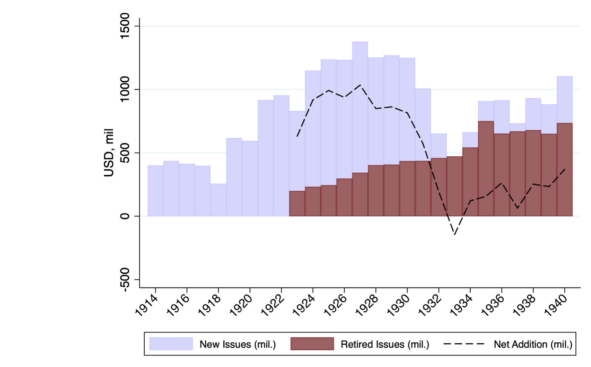
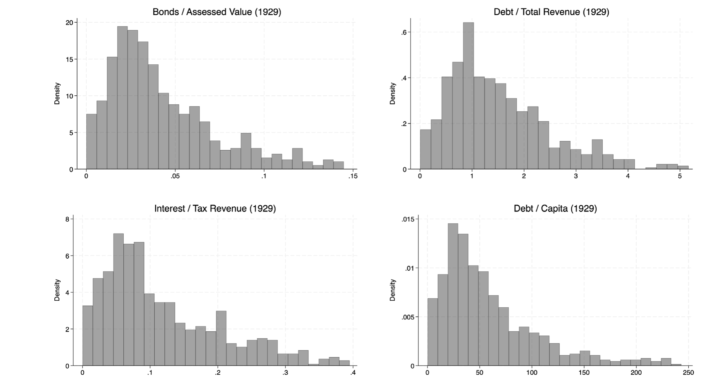
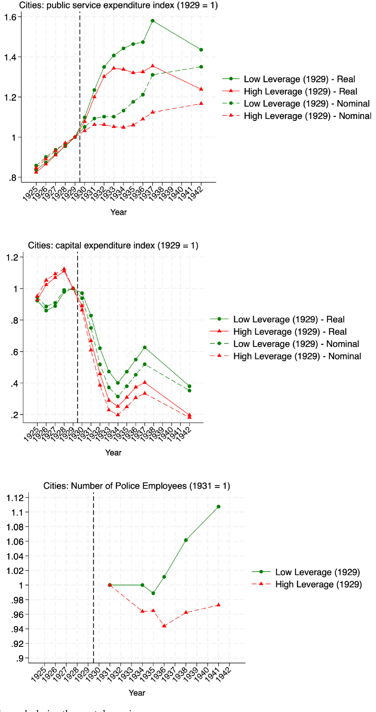
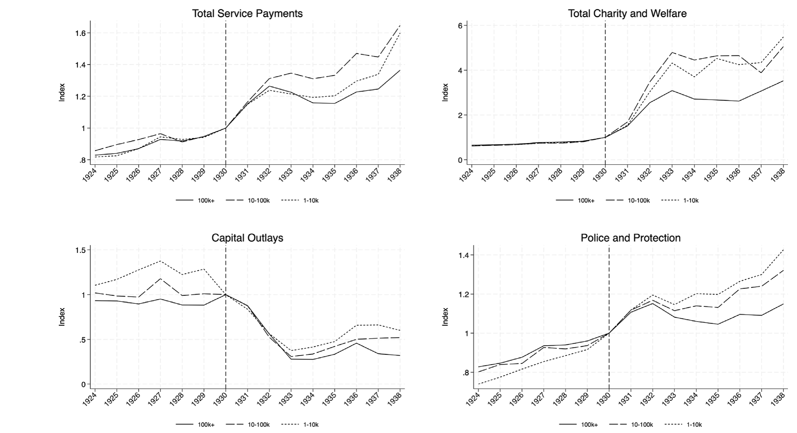
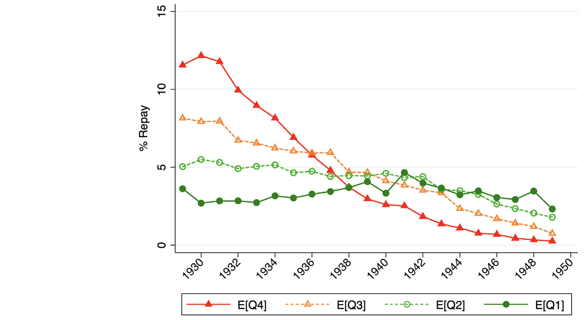
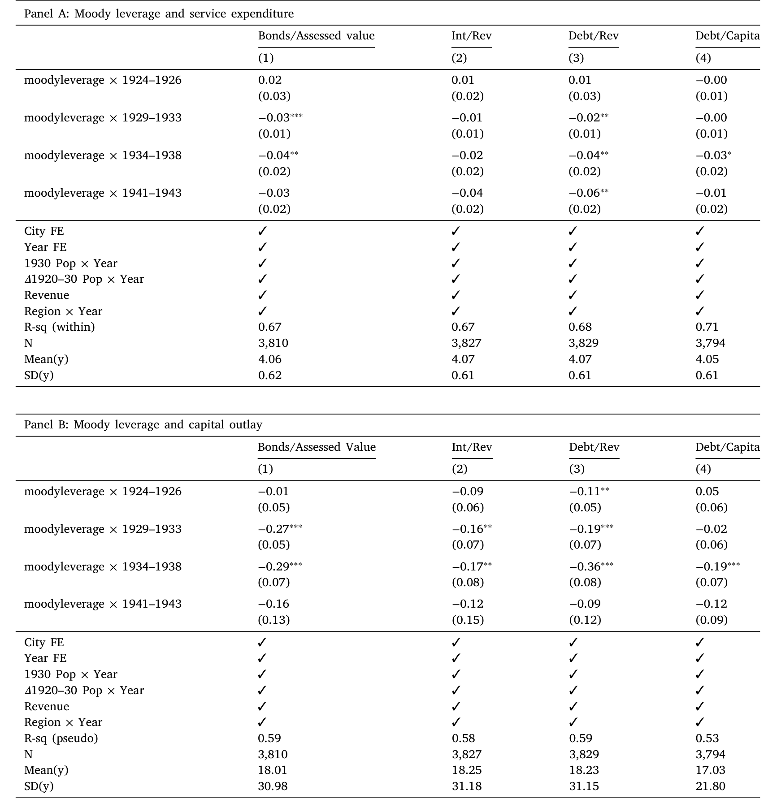
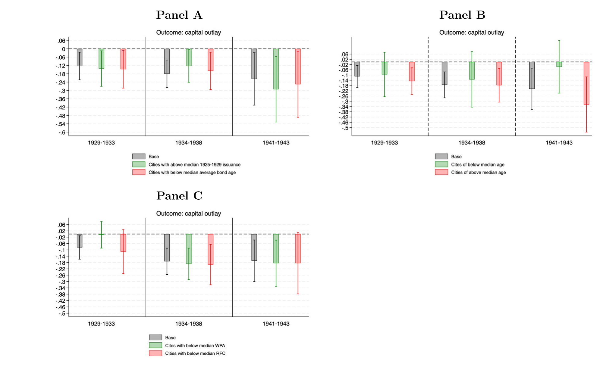
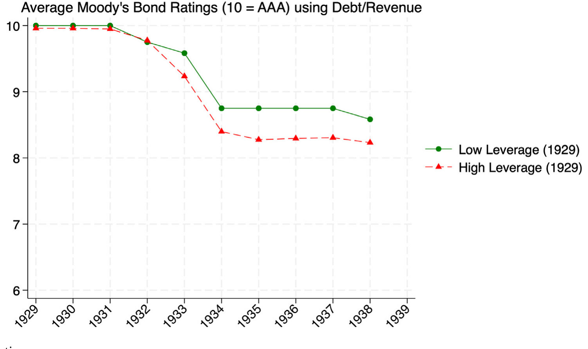
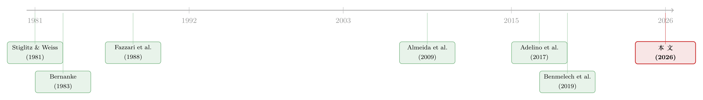

城市没有破产法，但有「到期日」：大萧条里的地方公共品
本文读的是 Janas (2026, Journal of Financial Economics)：在大萧条这个几乎没有联邦救助的「干净」实验里，作者用 1924–1943 年美国城市的档案数据证明，危机前借得越多的城市，危机中砍公共开支砍得越狠——尤其是资本投资和警力；而真正驱动这场紧缩的，不是「该建的都建完了」，而是到期债务无法展期的再融资约束。代价是人口增长放缓、犯罪上升、技能更高的公务员流失。
1 一个被现代财政「藏起来」的问题
先讲一个我们这代人几乎想当然的常识：经济一旦下行，钱就会从上面流下来。2020 年新冠冲击，美国联邦给地方的 $350 billion 财政复苏基金（Local Fiscal Recovery Fund）、美联储 $500 billion 的市政流动性便利（Municipal Liquidity Facility）几乎是同时落地的。地方政府收入塌了一块，但服务可以不砍——因为有人兜底。
可问题是，这种「有人兜底」的安排，在历史上其实非常新。新政（New Deal）之前，联邦对地方事务的介入微乎其微，城市基本是独自扛过衰退的（Wallis, 2000）。于是一个被现代逆周期财政「藏起来」的问题重新浮现：当没有人兜底的时候，一座城市的债务，会怎样塑造它在危机中提供公共品的能力？
这正是本文的切入口。我们对家庭和企业在危机中的「债务诅咒」已经很熟悉了——欠债越多的主体往往受伤越重（Mian et al., 2013；Chodorow-Reich, 2014）。但对「加了杠杆的地方政府」，我们知道得出奇地少，尽管美国市政债市场到 2025 年已经有 $4.2 trillion 的规模。
作者抓住了一个绝佳的历史实验室：大萧条。理由有二。其一，那个年代地方政府是公共服务的主要提供者，几乎不依赖上级转移支付——萧条前的支出格局大约是地方 50%、州 25%、联邦 25%；到 1940 年新政之后才翻转成地方 10%、州 5%、联邦 85%。其二，萧条对市政预算是一次罕见而剧烈的冲击，而联邦大规模救助的缺席，恰恰消除了现代研究里最头疼的「财政后盾」干扰项。
这一点值得停下来体会：今天我们之所以难研究「地方紧缩的后果」，恰恰是因为逆周期救助太及时、太普遍，把因果给「治好」了。作者反其道而行——回到一个救助缺席的年代，让冲击充分暴露出来。
2 那场被债务点燃、又被债务浇灭的城市化
要理解萧条期的紧缩，得先理解 1920 年代的繁荣。
那是一场债务驱动的基础设施大跃进。1920 年代美国市政债年均发行 $1.1 billion，远高于上一个十年的 $417 million。三股力量在背后推：一是「高中运动」，中学入学率从 1900 年的 10% 飙到 1940 年的 70%（Goldin and Katz, 1997），要盖新学校；二是乡村到城市的大迁徙，推高了对供电、给排水的需求；三是汽车与早期郊区化，催生了铺路和公共交通的巨额投资。这些资本项目大多靠发债来融资——城市的债，本质上就是它过去建过的那些路、学校和水厂的影子。

Figure 1: Municipal debt sales and retirements
当时就有人看到了风险。1922 年 12 月 4 日，《华尔街日报》警告：「后果不会在今天或明天到来，但若干年内，我们终将看到一批破产的乡镇与县……如今用来征税的房地产估值，大多被严重高估了。」而企业可以在衰退中退出、清算，城市却不能被清算——它只能裁人、砍服务。
接着，一个自然的问题是：当 1929 年崩盘来临，是不是危机前借得越多的城市，砍得越狠？ 这就是全文的主轴。
3 识别策略：用「危机前的杠杆」做双重差分
作者的核心设计是一个双重差分 (difference-in-differences, DiD)：比较高杠杆城市与低杠杆城市，在 1929 年前后的财政调整差异。
「杠杆」怎么衡量？作者主要用债务/应税房产价值 (bond debt / assessed value) 这个比率，因为房产税是城市收入的大头；稳健性上还用了债务/总收入、债务/人口等口径。这些比率不是事后随手编的——它们正是当年州监管者和评级机构用来评估市政信用的指标。在 1929 财年末，平均一座城市的债券规模相当于应税房产的 4%，把收入的 12% 拿去付利息，总债务约为年收入的 1.53 倍，人均负债 $52。

Figure 3: Pre-Depression municipal financial leverage ratios
正式的设定是一个分五个时期的 DiD：
$$y_{it} = year_t + city_i + \theta X_{it} + \sum_{j\in t,\; j\neq 1927} \beta_j \times period_j \times leverage_{29,i} + \epsilon_{it}$$
我们把这个方程逐块拆开看——它其实就是整篇论文的「发动机」：
这里的关键是省略期取 1927（j≠1927）——也就是说，所有 β_j 都是相对萧条前的基准来读。如果萧条前的那些 β_j 接近零、萧条后的显著为负，那就是一幅漂亮的平行趋势图：两类城市原本走得一样，是危机把它们劈开了。
结果正是如此。先看一张「不用跑回归就能看懂」的图：作者把城市按债务/房产值分成高、低两组，算三年滚动平均、标准化到 1928 年。

Figure 4: Leverage and local public goods during the great depression
如图 4 所示，1925–1929 年间，高、低杠杆城市的公共服务支出几乎没有差别；分化从 1930 年代初开始，到 1936 年，无论是服务性支出还是资本性支出，两组的差距都拉大到 超过 20 个百分点，并一直延续到 1940 年代初。下半张图更直观：警力（按人头数，不受价格影响）到 1936 年时，高杠杆城市削减了 6%，而低杠杆城市反而增加了 1%。
回到回归本身，量级同样清楚：处于杠杆 75 分位的城市，相对 25 分位的城市，把服务性支出砍掉了 3–7 个百分点，把资本投资砍掉了 15 个百分点。到 1940 年代初，服务支出大体收敛回去了，但资本投资的缺口持续存在——这一点后面会很重要。
一个容易被价格幻觉骗到的细节：1929–1933 年美国 CPI 跌了约 25%，是剧烈的通缩。所以名义支出 1929 年见顶后猛跌，但实际人均支出其实一直撑到 1932–1933 年才下来。作者全程用 CPI 平减，避免把通缩误读成紧缩。
整个 1924–1938 年间各类支出的下滑可以在下图里看得更全：资本性支出跌得最早最狠，平均比 1929 年低 60%，到 1935 年有四分之一的小城市干脆把建设开支砍到了零；其余经常性支出降得更缓——警察与消防降 20%，一般行政降 10%，卫生部门降 15%。

Figure 2: Municipal services and outlays (1924–1938)
4 但真正关键的一步：是「钱借不到」，还是「该建的建完了」？
到这里，故事还差一口气。因为 DiD 只告诉我们「高杠杆城市砍得更狠」，却分不清两个机制：
- 再融资紧缩 (refinancing tightness)：杠杆高 → 信用差 → 在信贷收紧时借不到新钱去借新还旧 → 被迫紧缩；
- 投资周期 (investment cycles)：危机前杠杆高的城市，可能本来就已经建得差不多了，于是萧条期自然没那么多要投——是「需求」端的事，跟金融约束无关。
这两个机制会给出一模一样的回归符号，却有截然不同的政策含义。怎么把它们掰开？
这就是全文最漂亮的一步：作者用债券到期的时间结构，制造了一个与当期投资需求无关的「偿还冲击」。1929 年崩盘让债市瘫痪（Hillhouse, 1936），到期债务很难展期（roll over）。于是，碰巧有更多债券在 1930–1933 年这个窗口到期的城市，就遭遇了一次急性的偿还冲击——而一只债券是否在这几年到期，取决于它多年前（平均发行于 1918 年）的发行条款，跟萧条期的投资需求八竿子打不着。这套「用到期结构做准自然实验」的思路，沿用的是 Almeida et al. (2009) 和 Benmelech et al. (2019) 的方法。

Figure 7: Annual repayment based on repayment shock quartile
用债券层面数据，作者比较了在其他方面相似、但到期债务份额不同的城市。结果如表 4 所示：到期债务越多的城市，资本和服务支出砍得越多。

Table 4: reports results using the repayment shock, with log real
更进一步，处于银行恐慌县的城市紧缩得更深——这说明金融中介成本（intermediation cost）在直接咬人。然后是对需求端的「证伪」：作者剔除掉那些本就低需求的城市（比如人口已不增长、本就该停建的），结果纹丝不动。

Figure 8: Excluding low-demand cities
于是反转落定：驱动这场又急又持久的公共品萎缩的，是融资约束，而不是投资周期。 这也解释了前面那个伏笔——为什么资本缺口到 1940 年代仍未弥合：不是城市不想建，是它在信用市场上被「关在门外」了。一个佐证是信用评级：高杠杆城市是在萧条之后、而非之前，才拿到更低的穆迪评级。

Figure 6: Moody’s credit ratings
这里的经济学，其实是把企业金融里熟到不能再熟的逻辑搬到了城市身上：在信息不对称下，越接近违约的借款人越容易被信贷配给（Stiglitz and Weiss, 1981；Bernanke, 1983）。只不过城市有个特别之处——在 1937 年《破产法》第九章建立之前，违约的代价极其高昂：债权人要先去州或联邦法院申请「执行令状」(writ of mandamus)，城市一旦被诉违约，就会被踢出保险公司、州储蓄银行能投资的「合法清单」，按 Hillhouse (1936) 的说法，这种「失宠」可能持续十五到二十五年。所以城市宁可砍服务、裁公务员，也极力不违约——紧缩，正是这种「死扛不违约」的副产品。
5 代价落在谁身上：人口、犯罪，和「带着技能离开的人」
最后一层，作者把镜头从账本移到真实世界。
衡量「偿还冲击」，结果是持续的：到期债务每增加一个标准差，预测到 1940 年（1950 年）的人口增长持续下降 0.9（2.7）个百分点；1933 年每 10 万人多出 107 起财产犯罪——约为 1930 年均值的 4%。
最耐人寻味的是劳动力市场。作者用 100% 美国人口普查的链接记录（Census Tree Project；Price et al., 2023），追踪地方公共部门的从业者。高负债城市的男性公职人员，离开公共部门的概率高出 1.3 个百分点。而在所有离开者里，平均而言人们流向了收入评分低 4.2%、职业收入分位低 2.1 个百分点的岗位——是一次向下的职业流动。
但关键的细节藏在「谁离开」里：从高杠杆城市离开的人，是被「正向筛选」出去的——他们更年长、多受过 0.063 年教育、到 1940 年的周薪（对数）高 0.9%。换句话说，紧缩不是均匀地赶走人，而是优先逼走了更有技能、更有人力资本的公务员，这很可能在萧条之后长期削弱了城市的行政能力。一个有意思的镜像是：这些高技能离开者的「向下流动」幅度反而比低杠杆城市的离开者小 15–20%——能力强的人即便被迫走，也更容易找到不太差的下家。
故事至此收口：一笔几十年前签下的债，借由「到期日」这个开关，在一场无人兜底的危机里，先掐断了一座城市的再融资，再传导成更少的路与学校、更弱的警力、更多的犯罪、更慢的人口增长，最终掏空了它最能干的那批公务员。
6 文献脉络
把这篇论文放回它生长的谱系里，会更清楚它的位置。
最上游，是企业金融约束的经典框架：Fazzari et al. (1988) 用投资—现金流敏感性、Kaplan and Zingales (1997) 的争论，奠定了「融资约束如何扭曲实体决策」的问题意识；而在宏观层面，金融加速器（financial accelerator）一脉——Bernanke (1983)、Gertler and Gilchrist (1994)、Bernanke et al. (1996)——把信贷摩擦放进了商业周期，连同 Stiglitz and Weiss (1981) 的信贷配给，构成了「为什么高杠杆主体在危机里被门外汉」的理论底座。

往中游走，是把这套逻辑用到危机中实体后果的实证：Almeida et al. (2009) 与 Benmelech et al. (2019) 开创了「用债务到期结构识别再融资冲击」的方法——前者看 2007 信贷危机，后者正是看大萧条里的企业与就业。本文在方法上是这条线的直系后裔，只是把研究对象从企业换成了城市。
最下游，是地方公共财政这条还很年轻的支线。现代证据里，Adelino et al. (2017) 看市政债评级重校如何影响公共融资，Yi (2020) 看信用供给冲击与公共品，Cromwell et al. (2015) 看大衰退后的佛州城市——但它们都在「联邦大救助」的年代里。本文的差异化贡献，是回到一个财政独立、救助缺席的危机，从而干净地分离出「债务驱动的约束」与「需求端的投资周期」；同时，它接着 Siodla (2020)、Gunter and Siodla (2018) 对 1930 年代城市债务危机的研究，把样本从少数大城市扩展到一个更广的市政全集。
（关于「地方金融冲击如何外溢到实体」这条思路，本博客也聊过现代版本，见《存款往哪儿流，比哪家银行倒下更重要》；而把「企业为何在乎自己的债务负担」讲透的，可参见《把风险揣进兜里：企业为什么主动持有有风险的金融资产？》。）
7 评论与延伸（Q&A + 研究方向）
(a) 几个可能的疑问
Q：1929 年的杠杆并不是随机分配的，高杠杆城市本来就「不一样」，DiD 能信吗？
这是最核心的担忧，作者用两层防御回应。第一层是平行趋势：图 4 显示 1925–1929 年两组支出几乎无差异，分化只在 1929 之后出现。第二层、也是更有说服力的，是用债券到期窗口（1930–1933）构造的偿还冲击——一只债券是否在此到期取决于多年前的发行条款，与萧条期需求无关，从而把「杠杆高 = 城市本来就差」的内生性绕开了。
Q：那「投资周期」的解释真的被排除了吗？会不会高杠杆城市就是建完了、不用再建？
作者直接做了证伪：剔除低需求城市（图 8）后结果不变；偿还冲击是与当期投资需求正交的；而且银行恐慌县的城市紧缩更深——这些都指向「钱借不到」而非「不想建」。最有力的反证是持久性：资本缺口拖到 1940 年代仍未弥合，纯需求故事很难解释为何「想建也建不回来」。
Q：通缩这么猛，会不会把实际效应都算错了？
作者全程用 CPI 平减到实际值，并特意指出：名义支出 1929 见顶即跌，但实际人均支出撑到 1932–1933。警力一项更是直接用人头数衡量，完全不受价格影响——而它照样在高杠杆城市里下降了
6%。所以紧缩是真实的，不是通缩的会计幻觉。
Q：城市又不能破产清算，为什么不干脆违约、把钱留给服务？
因为 1937 年《破产法》第九章之前，违约代价极高：要走「执行令状」诉讼，一旦被诉违约就会被踢出保险公司和州储蓄银行的「合法投资清单」，按 Hillhouse (1936) 这种失宠可能持续 15–25 年，等于未来融资市场被永久收窄。于是城市理性地选择「死扛不违约」，而紧缩正是这一选择的代价。
Q：这跟现代的市政债研究（如 Adelino et al., 2017；Yi, 2020）到底差在哪？
差在「有没有联邦后盾」。现代研究都处在逆周期转移支付普遍存在的环境里，财政后盾会污染对「地方紧缩后果」的估计。本文的独特价值是回到一个救助缺席、财政独立的危机，让债务约束的因果效应充分暴露——它强调的是这种「不对称」：没有兜底时，冲击会放大得多。
Q：样本只有五个州加大城市，外部有效性够吗？
这是诚实的局限。作者的理由是，这几个州（MA、NY、OH、IN、CA）外加所有 10 万人以上的城市，是当年唯一按年报告地方服务数据的；样本覆盖了 1930 年约
65%的美国城市人口、4470 万人，已经相当有代表性。但州的选择仍可能带来选择性，结论外推到南部、农业州时要谨慎。
(b) 几个可能的研究问题与提案
1. 把「到期墙」搬到现代美国市政债市场
【经济故事】本文证明 1930 年代「到期债务无法展期」会传导成公共品萎缩。今天市政债同样有明确的到期结构，而 2020 年美联储 MLF 恰恰提供了一个救助的「开关」。可以问：在 MLF 之前/之后，到期墙较高的城市是否削减服务更多，救助是否真的熨平了这种再融资冲击？ 【可行性】高。数据现成（EMMA 的市政债逐券到期数据 + Census of Governments 的地方财政），识别可直接复刻 Almeida et al. (2009) 的到期份额工具，并用 MLF 资格门槛做断点/DiD。
2. 外资/机构持有人结构如何改变市政债的「再融资脆弱性」
【经济故事】本文的紧缩来自信息不对称下的信贷配给。如果一座城市的债更多被对信息敏感、顺周期的持有人（如货币基金、外国机构）持有，再融资冲击会不会更剧烈？这把「持有人结构 → 流动性 → 实体后果」的链条接到了公共品上。 【可行性】中。需要市政债持有人结构数据（Lipper/Morningstar 基金持仓、TIC 的外资持有），机构持仓在市政债上不如公司债透明，识别要靠基金赎回冲击外生地传导到所持城市。
3. 信用评级冲击对地方公共品的因果效应
【经济故事】本文发现高杠杆城市在萧条后才被降级，借贷成本上升、维护与升级受阻。可以反过来用一次外生的评级方法变更（如 Adelino et al., 2017 用的评级重校）问：评级被动上调/下调的城市，公共品的水平与构成（资本 vs. 经常性）如何变化？ 【可行性】高。Adelino et al. (2017) 的重校事件是干净的外生变动，叠加地方财政面板即可做 DiD。
4. 公共部门的人力资本「正向流失」是否长期削弱行政能力
【经济故事】本文最新颖的发现之一是紧缩优先逼走更高技能的公务员。一个自然的延伸：这种人力资本流失，是否在萧条后的十几年里持续拉低了城市的征税效率、公共品质量，甚至下一轮危机中的应对能力？ 【可行性】中。需要把链接普查记录（Census Tree）继续追到 1950 年，并构造城市层面的行政绩效代理（如税收征收率、违约后复出市场的速度），识别可沿用本文的偿还冲击作为工具。
5. 「不能清算」的借款人在危机中的最优债务结构
【经济故事】城市与企业的根本差异在于不可清算却可裁员。这提出一个理论问题：当一个借款人无法退出、违约代价又是「长期失宠」时，它的最优到期结构与杠杆应是什么样？本文提供了丰富的经验事实来校准这样一个模型。 【可行性】中。属偏理论方向，需要建一个含违约「污名成本」与再融资摩擦的动态模型，再用本文的市政债微观数据做结构估计；doable，但工作量大。
8 我的判断与参考文献
贡献。 这篇论文最让我欣赏的，是它对「干净实验室」的执着。它没有去和现代数据里无处不在的财政后盾搏斗，而是回到一个救助缺席的年代，把「债务驱动的约束」从「需求端投资周期」里干净地剥离出来——这种剥离靠的是债券到期窗口这个真正外生的开关，而非更多控制变量。再加上大规模的档案数字化（12,000+ 城市—年观测、28,000 只债券、上百万条链接普查记录），它把一个我们「以为知道」的直觉，第一次量成了可信的因果。
对识别的担忧。 我有两点保留。其一是样本的州选择——只有报告年度数据的五个州加大城市，虽覆盖了多数城市人口，但这些州本身可能在制度、信贷可得性上系统不同，外推需谨慎。其二是「偿还冲击」虽与当期投资需求正交，却未必与城市的长期信用质量正交：发行条款是多年前定的，但当年敢发长期债的城市，可能本就有某种持久的财政文化或政治特征，这类不可观测的城市禀赋仍可能同时影响到期结构与萧条期表现。作者用城市固定效应吸收了不随时间变的部分，但若这种禀赋的影响在危机中被「激活」，残余偏误仍存。
后续想看到什么。 我最想看到的，是把这套逻辑接到一个有清晰救助门槛的现代场景里（比如 2020 的 MLF），直接量出「兜底」到底熨平了多少再融资冲击——这会把本文的历史结论变成一句可检验的现代政策含义。其次，是「高技能公务员被优先逼走」这个发现的长期版本：如果行政能力真的被一次危机永久削弱，那市政紧缩的社会成本，可能比账面上的支出削减要大得多。
参考文献
- Adelino, M., Cunha, I., Ferreira, M. A. (2017). The economic effects of public financing: Evidence from municipal bond ratings recalibration. Review of Financial Studies 30(9), 3223–3268.
- Almeida, H., Campello, M., Laranjeira, B., Weisbenner, S. (2009). Corporate Debt Maturity and the Real Effects of the 2007 Credit Crisis. NBER Technical Report.
- Benmelech, E., Frydman, C., Papanikolaou, D. (2019). Financial frictions and employment during the Great Depression. Journal of Financial Economics 133(3), 541–563.
- Bernanke, B. S. (1983). Non-Monetary Effects of the Financial Crisis in the Propagation of the Great Depression. NBER Technical Report.
- Bernanke, B., Gertler, M., Gilchrist, S. (1996). The financial accelerator and the flight to quality. Review of Economics and Statistics 78(1), 1–15.
- Chodorow-Reich, G. (2014). The employment effects of credit market disruptions: Firm-level evidence from the 2008–9 financial crisis. Quarterly Journal of Economics 129(1), 1–59.
- Cromwell, E., Ihlanfeldt, K. (2015). Local government responses to exogenous shocks in revenue sources: Evidence from Florida. National Tax Journal 68(2), 339–376.
- Fazzari, S., Hubbard, R. G., Petersen, B. (1988). Investment, financing decisions, and tax policy. American Economic Review 78(2), 200–205.
- Gertler, M., Gilchrist, S. (1994). Monetary policy, business cycles, and the behavior of small manufacturing firms. Quarterly Journal of Economics 109(2), 309–340.
- Goldin, C., Katz, L. F. (1997). Why the United States led in education: Lessons from secondary school expansion, 1910 to 1940. NBER Technical Report.
- Gunter, S., Siodla, J. (2018). Local origins and implications of the 1930s urban debt crisis.
- Hillhouse, A. M. (1936). Municipal Bonds: A Century of Experience. Prentice-Hall.
- Kaplan, S. N., Zingales, L. (1997). Do investment-cash flow sensitivities provide useful measures of financing constraints? Quarterly Journal of Economics 112(1), 169–215.
- Stiglitz, J. E., Weiss, A. (1981). Credit rationing in markets with imperfect information. American Economic Review 71(3), 393–410.
- Wallis, J. J. (2000). American government finance in the long run: 1790 to 1990. Journal of Economic Perspectives 14(1), 61–82.